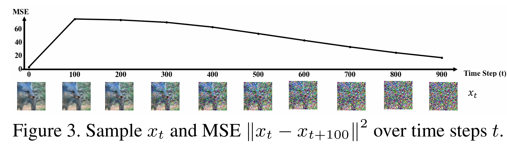
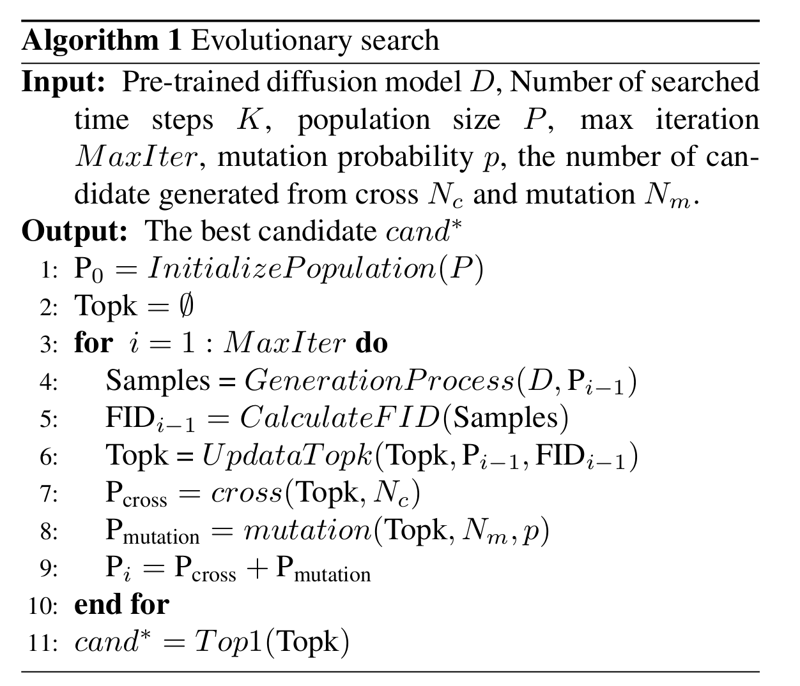

全文翻译
摘要
扩散模型是新兴的具有表现力的生成模型，其中单次图像生成需要大量的时间步（推理步骤）。为了加速这一繁琐过程，均匀减少步骤被认为是扩散模型的无可争议的原则。我们认为这种均匀假设在实践中并非最优解，即我们可以为不同的模型找到不同的最优时间步。因此，我们提出在一个统一的框架中搜索最优时间步序列和压缩模型架构，以实现扩散模型的有效图像生成，而无需任何进一步的训练。具体来说，我们首先设计了一个包含所有可能时间步和各种架构的统一搜索空间。然后，引入两阶段进化算法在设计的搜索空间中寻找最优解。为了进一步加速搜索过程，我们利用生成样本和真实样本之间的FID分数来估计采样示例的性能。结果表明，所提出的方法（i）无需训练，无需任何训练过程即可获得最优时间步和模型架构；（？不是使用了优化算法和NAS求解）（ii）与大多数先进的扩散采样器正交，可以集成以获得更好的样本质量；（iii）具有通用性，搜索到的时间步和架构可以直接应用于具有相同引导尺度的不同扩散模型。实验结果表明，我们的方法仅使用几个时间步就取得了优异的性能，例如在ImageNet 64×64上仅用4步就获得了17.86的FID分数，而DDIM的FID分数为138.66。代码可在https://github.com/lilijiangg/AutoDiffusion获取。
1. 引言
扩散模型是一类表现力日益凸显的生成模型，单次图像生成需要大量时间步（推理步骤）。为加速这一繁琐过程，均匀减少步骤被视作扩散模型的既定原则。但我们认为，这种均匀性假设在实际中并非最优解——不同模型可对应不同的最优时间步序列。因此，我们提出在统一框架中搜索最优时间步序列与压缩模型架构，以实现扩散模型的高效图像生成，且无需额外训练。具体而言，我们首先设计包含所有可能时间步和多样架构的统一搜索空间，再引入两阶段进化算法在该空间中寻优。为进一步加速搜索，我们利用生成样本与真实样本的FID分数评估采样候选的性能。实验表明，该方法具有三大优势：（i）无需训练，直接获取最优时间步与模型架构；（ii）与主流扩散采样器正交，可集成提升样本质量；（iii）具备通用性，搜索结果可直接应用于相同引导尺度的不同扩散模型。例如，在ImageNet 64×64上，仅用4步即可达到17.86的FID分数，远优于DDIM的138.66。代码见https://github.com/lilijiangg/AutoDiffusion。
扩散模型在图像生成[14,24,8,2,29,4,15,38]、超分辨率[33,39,6]、图像修复[22,31]和文本到图像生成[25,32,27,10]等任务中表现出色。其通过扩散过程向数据逐步添加噪声直至符合高斯分布，再学习逆过程恢复数据，实现精确似然计算与高质量采样。但生成速度慢是主要瓶颈：V100 GPU上StyleGAN生成256×256图像仅需0.015秒，而ADM模型[8]因多步去噪需14.75秒。
现有加速研究主要分为两类：一类将生成过程建模为随机微分方程（SDE）或常微分方程（ODE），通过数值方法求解以实现即插即用的采样器[36,20,6,21]；另一类利用知识蒸馏减少时间步[34,23]，使噪声预测网络从原始生成过程学习。但这些方法普遍忽视时间步序列的优化，多采用均匀采样或固定函数采样[36]。我们认为，给定扩散模型在任意长度下均存在最优时间步序列，且该序列随任务和模型超参数变化，替换为最优序列可提升生成质量。
受神经架构搜索（NAS）技术[28,42,26,18,1]启发，我们提出AutoDiffusion框架：从预训练扩散模型和目标时间步数出发，构建包含时间步序列与噪声预测网络架构的统一搜索空间，以生成样本与真实样本的距离为评估指标，通过进化算法寻优。实验验证，该方法在少步长场景下（如4步）的图像质量显著优于均匀时间步，且搜索结果可迁移至相同引导尺度的模型，还能与现有采样器结合进一步提升性能。
核心贡献包括：1）打破均匀采样的次优假设，提出针对各扩散模型的最优时间步与架构搜索空间，可加速采样并增强采样器性能；2）设计无训练统一框架，通过两阶段进化算法和FID评估实现高效搜索；3）实验验证方法的无训练性、正交性与通用性，在少步长下实现17.86的FID分数（DDIM为138.66），生成速度提升2倍。
| 图1. 左图：我们提出在统一框架中搜索最优时间步序列及相应的压缩网络架构。右图：在ImageNet 64×64上预训练的ADM-G[8]模型，使用和不使用我们的方法（AutoDiffusion）并改变时间步数时生成的样本。 |
2. 相关工作
2.1 扩散模型
给定从未知分布 $p_{data}(x_0)$ 采样的变量 $x_0 \in \mathbb{R}^D$，扩散模型定义了一个扩散过程 $\{x_t\}_{t \in [0:T]}$，通过 T 个扩散步骤将数据 $x_0$ 转换为样本 $x_T$。样本 $x_T$ 的分布 $p(x_T)$ 通常是简单且易处理的，例如标准正态分布。在扩散过程中，时间步 t 时变量 $x_t$ 的分布满足：
其中 $\{\alpha_1, \alpha_2, \cdots, \alpha_T\}$ 和 $\{\beta_1, \beta_2, \cdots, \beta_T\}$ 是扩散模型的超参数，控制着将 $x_0$ 转换为 $x_T$ 的速度。
之后，扩散模型定义了一个由神经网络 $\theta$ 参数化的反向过程 $p_\theta(x_{t-1} | x_t)$，并通过最大化对数证据下界（ELBO）来优化它[24]：
其中 $D_{\text{KL}}$ 表示KL散度。
在实践中，扩散模型使用噪声预测网络 $\epsilon_\theta(x_t, t)$ 来估计时间步 t 时噪声样本 $x_t$ 的噪声分量。因此，公式2中的损失函数可以简化为[14]：
其中 $\epsilon$ 表示 $x_t$ 的噪声分量，根据公式1有 $x_t = \alpha_t x_0 + \beta \epsilon$。在大多数扩散模型中，生成噪声样本 $x_t$ 时，噪声 $\epsilon$ 从标准正态分布 $N(0, I)$ 中采样。
当噪声预测网络 $\epsilon_\theta(x_t, t)$ 训练完成后，扩散模型定义了一个生成过程来获取样本。该过程从 $p(x_T)$ 中采样噪声数据开始，通过学习到的分布 $p_\theta(x_{t-1} | x_t)$ 逐步生成更清晰的样本 $x_{T-1}, x_{T-2}, \cdots, x_0$。这个过程需要噪声预测网络 $\epsilon_\theta$ 进行 T 次前向传播才能获得最终样本 $x_0$。为了加快这一过程，许多研究试图将时间步的数量减少到 $K < T$，并提出了许多先进的采样器来补偿因减少时间步而导致的样本质量损失。但它们大多忽略了最优时间步的选择，通常基于简单函数对新的时间步进行采样。例如，DDIM[36]按线性或二次过程选择时间步，线性过程生成长度为 K 的新时间步序列，如 $[0, \frac{T}{K}, \cdots, \frac{KT}{K}]$。我们的主要贡献是为扩散模型搜索长度为 K 的最优时间步序列。
2.2 神经架构搜索
神经架构搜索（NAS）算法的目标是在广泛的搜索空间中自动搜索合适的神经网络架构。NAS 由三个基本组件组成：搜索空间、搜索策略和性能评估策略[9]。搜索空间指定了要探索的架构集合，并确定候选神经网络的表示方式。搜索策略概述了探索搜索空间的方法，通常涉及根据当前所选候选的性能评估从搜索空间中选择新的候选。性能评估策略定义了评估搜索空间中候选神经网络性能的方法，有效的性能评估策略确保准确快速的评估，是 NAS 有效性和速度的基础[44]。
NAS 算法已被应用于各个领域来设计合适的网络架构。因此，在这项工作中，我们旨在使用该技术优化扩散模型的时间步和架构。
2.3 扩散模型的快速采样
许多研究旨在提高扩散模型的生成速度。一些方法将生成过程建模为 SDE 或 ODE，从而得到无需训练的采样器[36,20,21]。然而，当步数降至 10 以下时，这些方法通常会降低图像质量[3]。其他方法通过知识蒸馏[34,23,3]或学习快速采样器[40]来加速扩散模型。例如，渐进蒸馏（PD）使用知识蒸馏将时间步的数量减半[34]，这种蒸馏会迭代进行，直到步数少于 10，这通常需要大量的计算资源。DDSS 将采样器设计视为可微优化问题，利用重参数化技巧和梯度重计算来学习快速采样器[40]。尽管 DDSS 提供了显著的加速，但它缺乏灵活性，因为为一个模型定制的采样器可能不适用于另一个模型，需要不同的学习阶段。与这些方法相比，AutoDiffusion 效率更高且更灵活，正如我们的实验所证实的那样。其搜索结果可以转移到使用相同引导尺度的另一个扩散模型，而无需重新搜索。此外，AutoDiffusion 为时间步和模型层使用统一的搜索空间，而现有方法只关注步数的减少。
3. 方法
在本节中，我们将介绍AutoDiffusion，其旨在为给定的扩散模型搜索最优的时间步序列和架构。我们方法的概述如图2所示。在接下来的内容中，我们首先在3.1节讨论方法的动机，然后在3.2节介绍搜索空间，之后在3.3节阐述性能评估，最后在3.4节介绍进化搜索。
| 图2. AutoDiffusion概述。给定一个预训练的扩散模型，我们首先设计一个包含时间步和架构的统一搜索空间。之后，利用FID分数作为性能评估策略。最后，应用进化算法在统一搜索空间中搜索最优时间步序列和架构。 |
3.1 动机
许多公认的理论指出，扩散模型的生成过程可分为多个阶段，且每个阶段中扩散模型的行为不同[5,7]。例如，文献[5]表明，扩散模型在每个时间步的行为可分为创建粗粒度特征、生成感知丰富的内容以及去除剩余噪声。直观来看，这些任务的难度各不相同，换句话说，扩散模型的去噪难度随时间步而变化。受这些研究的启发，我们假设生成过程中每个时间步的重要性不同，因此认为在所有可能的时间步序列中，存在一个适用于扩散模型的最优时间步序列。
为了验证这一假设，我们进行了一项实验：获取样本$r$，并计算每个时间步$t$的均方误差（MSE）$\left|x_t - x_{t+100}\right|^2$。结果如图3所示，当$t \in [600, 1000]$时，样本主要由噪声主导，难以辨认；而当$t \in [300, 600]$时，扩散模型生成图像的主要内容，生成图像中的物体变得可识别；此外，观察到当$t \in [0, 300]$时，扩散模型主要去除噪声，导致$t \in [0, 300]$的样本相似。进一步地，图3表明，$t \in [0, 100]$和$t \in [700, 900]$时MSE较低，而$t \in [200, 600]$时MSE较高。
|  |
|---|
| 图3. 样本$x_t$及随时间步t变化的均方误差$\mid x_t - x_{t+100}\mid^2$ |
基于图3的发现，显然不同时间步在扩散模型的生成过程中扮演不同角色。具体而言，当$t$较小时或较大时，生成样本的内容变化缓慢；而当$t$处于中间时，内容变化迅速。因此，我们认为均匀时间步并非最优，生成过程中存在一个最优时间步序列。此外，由于去噪难度随时间步变化，我们认为噪声预测网络的模型规模在每个时间步不一定相同，因此在统一框架中搜索时间步和架构。
3.2 搜索空间
在本节中，我们讨论AutoDiffusion中搜索空间的设计。给定一个时间步为$[t_1, t_2, \cdots, t_T] (t_i < t_{i+1})$的扩散模型，其需要调用噪声预测网络$\epsilon_\theta$共$T$次以生成一批图像。为加速生成过程，通常采用两种方法：减少时间步数量或减少$\epsilon_\theta$中的层数。为此，我们提出一个包含两个正交组件的搜索空间：1）以时间步为搜索对象的时间搜索空间；2）以噪声预测网络$\epsilon_\theta$的架构为搜索对象的空间搜索空间。在我们的搜索空间中，候选$cand$定义如下：
其中，$\mathcal{T}$表示采样的时间步序列，$\left[t_1’, t_2’, \cdots, t_K’ \right]$是原始时间步序列$\left[t_1, t_2, \cdots, t_T \right]$的子序列；$\mathcal{L}$表示采样的架构，其中$L_i = [l_i^1, l_i^2, \cdots, l_i^{n_i}]$是时间步$t_i’$时噪声预测模型的架构，$n_i$是时间步$t_i’$时的架构层数，且不得超过$\epsilon_\theta$的层数。每个$l_i^j \in L_i$表示时间步$t_i’$时噪声预测网络$\epsilon_\theta$的一层，因此$L_i$可视为$\epsilon_\theta$的子网络。在实践中，我们约束每个时间步的模型层数之和不超过$N_{max}$，即$\sum_{i=1}^K n_i \leq N_{max}$，其中$N_{max}$根据扩散模型的预期生成速度确定。
在时间维度上，我们在所有可能的时间步中搜索最优时间步序列；在空间维度上，我们搜索每个时间步的噪声预测网络的模型层。因此，我们可以在统一框架中搜索最佳时间步序列和压缩的噪声预测模型。值得注意的是，在搜索过程中，不同时间步的子网络$L_i$可能不同，因为不同时间步的去噪难度不同。我们认为，每个时间步$t_i’$的层数$n_i$反映了该时间步$t_i’$的去噪难度。
由于噪声预测网络$\epsilon_\theta$通常是UNet，我们没有在搜索空间中添加上采样或下采样层。在实践中，如果候选中未选择某个模型层，则该模型层将被跳跃连接替换。此外，在搜索过程中，$\epsilon_\theta$的搜索子网络不会被重新训练或微调。
3.3 性能评估
确定搜索空间后，我们需要选择评估指标，为搜索过程提供快速且合适的性能估计。有两类评估指标可能满足要求，一类是学习分布$p_\theta(x_{t_{i-1}} \mid x_{t_i})$与后验$q(x_{t_{i-1}} \mid x_{t_i}, x_0)$之间的距离，另一类是生成样本与真实样本的统计量之间的距离。
分布$p_\theta(x_{t_{i-1}} \mid x_{t_i})$与后验$q(x_{t_{i-1}} \mid x_{t_i}, x_0)$之间的距离通常使用KL散度估计。因此，排序后的候选时间步$\left[t_1’, t_2’, \cdots, t_K’ \right]$的性能估计可通过KL散度[24]获得：
给定一个训练好的扩散模型、从训练数据集中采样的图像$x_0$以及候选时间步$\left[t_1’, t_2’, \cdots, t_K’ \right]$，我们使用公式5计算KL散度，从而实现快速性能估计。然而，先前的工作指出，优化KL散度并不能提高样本质量[41,37]。为了验证这一结论，我们将在ImageNet 64×64上训练的扩散模型的时间步序列$\left[t_1, t_2, \cdots, t_T \right]$作为搜索空间，然后从该搜索空间中随机采样子序列$\left[t_1’, t_2’, \cdots, t_K’ \right]$，并计算这些子序列的FID分数、sFID分数、IS分数、精确率、召回率和KL散度。之后，我们通过计算它们之间的肯德尔tau系数[17]来分析这些指标与KL散度之间的相关性。表1显示，所有这些指标与KL散度之间的肯德尔tau值都很低，这意味着KL散度不能代表采样质量。
| 表1. 各指标与KL散度之间的肯德尔tau系数[17] |
生成样本与真实样本的统计量之间的距离可以使用KID分数或FID分数来估计。Daniel等人提出通过最小化KID损失来优化扩散模型的采样器[40]。受此工作的启发，我们使用FID分数作为性能评估指标。FID分数的公式如下[13]：
其中，$m_r$和$m_g$分别是真实样本和生成样本的特征均值，而$C_r$和$C_g$分别是真实样本和生成样本的特征协方差。通常，生成样本和真实样本的特征可以通过预训练的VGG[35]模型获得。
然而，计算精确的FID分数时至少需要生成10k个样本，这会减慢搜索速度。为了解决这个问题，我们减少了计算FID分数的样本数量。我们使用肯德尔tau系数[17]来确定减少的样本数量。具体来说，我们仍然将完整的时间步序列$\left[t_1, t_2, \cdots, t_T \right]$作为搜索空间，并从其中随机采样$N_{seq}$个子序列$\left[t_1’, t_2’, \cdots, t_K’ \right]$。然后，我们使用每个子序列生成50k个样本，并获得相应的FID分数$\{F_1, F_2, \cdots, F_{N_{seq}}\}$。之后，我们从50k个样本中获取$N_{sam}$个样本的子集，并计算它们的FID分数$\{F_1’, F_2’, \cdots, F_{N_{seq}}’\}$。我们计算$\{F_1, F_2, \cdots, F_{N_{seq}}\}$和$\{F_1’, F_2’, \cdots, F_{N_{seq}}’\}$之间的肯德尔tau系数。最优样本数量是使肯德尔tau系数大于0.5的最小$N_{sam}$。
3.4 进化搜索
我们利用进化算法从搜索空间中搜索最佳候选，因为进化搜索在先前的NAS工作中被广泛采用[28,11,12,19]。在进化搜索过程中，给定一个训练好的扩散模型，我们使用公式4从搜索空间中随机采样候选，形成初始种群。对于每个候选，我们利用其时间步和相应的架构生成样本，然后根据生成的样本计算FID分数。在每次迭代中，我们选择FID分数最低的前$k$个候选作为父代，并应用交叉和变异生成新的种群。为了进行交叉，我们在两个父代候选之间随机交换时间步和模型层；为了进行变异，我们选择一个父代候选，并以概率$P$修改其时间步和模型层。
在搜索时间步和架构时，我们利用两阶段进化搜索。具体来说，在进化搜索的前几次迭代中，我们使用完整的噪声预测网络，仅搜索时间步；然后，在剩余的搜索过程中，我们同时搜索时间步和模型架构。
4. 实验
4.1 实验设置
为了证明我们的方法可与任何预训练扩散模型兼容，我们将其应用于先前提出的扩散模型。具体而言，我们对Prafulla等人[8]提出的在ImageNet 64×64[30]和LSUN数据集[43]上训练的ADM和ADM-G模型进行了实验。此外，我们还将方法应用于Stable Diffusion[29]，以验证其在文本到图像生成任务上的有效性。另外，我们将方法与DDIM[36]、PLMS[20]和DPM-solver[21]结合，并应用于Stable Diffusion，以证明我们提出的方法可与大多数现有先进采样器结合并提升其性能。在所有实验中，我们使用这些先前工作的预训练检查点，因为我们的方法无需重新训练或微调扩散模型。
我们的方法从时间步和架构两个角度优化扩散模型的生成过程。4.2节表明，仅搜索最优时间步即可加速生成过程；在此基础上，4.4节证明，同时搜索时间步和架构可进一步提升样本质量和生成速度。在所有实验中，进化算法搜索的超参数设置如下：种群大小$P=50$，顶级数量$k=10$，变异概率$p=0.25$；仅搜索时间步时最大迭代次数$MaxIter=10$，同时搜索时间步和架构时$MaxIter=15$。对于未使用我们方法的实验，扩散模型使用均匀时间步和完整噪声预测网络生成样本。此外，所有使用ADM或ADM-G的实验均采用DDIM[36]采样器。我们像大多数先前工作一样，使用FID和IS分数评估生成图像的质量。
4.2 定量与定性结果
我们将方法应用于预训练的ADM-G和ADM模型在各种数据集上，结果如表2至表3所示。请注意，在这些实验中，我们仅搜索时间步，未搜索噪声预测网络的模型层。我们的方法可在少步长场景下显著提升扩散模型的样本质量，尤其在时间步极少时表现出色。例如，ADM-G在ImageNet 64×64上的FID分数为138.66，而我们的方法可将其降至17.86，这表明我们的方法可在极少步长场景下生成高质量样本。
| 表2. ADM-G[8]在ImageNet 64×64上使用和不使用我们方法时的FID（越低越好）和IS（越高越好）分数，改变时间步数。（+数字）表示与不使用我们方法的结果相比的提升。 |
| 表3. ADM[8]在LSUN数据集上使用和不使用我们方法时的FID分数（越低越好），改变时间步数。 |
我们将方法与DPM-Solver[21]、DDIM[36]和PLMS[20]结合，以证明我们的方法可与先进采样器集成。图4显示，我们的方法可在这些采样器基础上提升样本质量，尤其在步数$=4$的低步长情况下。这些结果表明，我们的方法可与大多数先进采样器结合，进一步提升其性能。此外，图4表明，使用我们方法的采样器可在10步内实现优异性能，比不使用我们方法的采样器快2倍。
| 图4. 使用不同采样器的Stable Diffusion[29]在使用和不使用我们方法时的FID分数。我们的方法可提升DDIM、PLMS和DPM-solver的FID分数。 |
图5显示了Stable Diffusion在少步长场景下使用DPM-Solver时，使用和不使用我们方法生成的样本。我们发现，使用我们方法生成的样本比其他样本具有更清晰的细节。图6表明，我们的方法与DPM-Solver在步数$=10$时生成的图像可与仅使用DPM-Solver在步数$=20$时生成的图像相媲美，且优于仅使用DPM-Solver在步数$=10$时生成的图像。
| 图5. 使用相同随机种子，Stable Diffusion在使用和不使用我们方法时，改变时间步数生成的样本。输入提示为“骑在马上的宇航员”和“戴着派对帽的柯基犬油画 |
 |
|---|
| 图6. 所提出的方法也与广泛使用的采样器DPM-Solver兼容。我们的方法在10步生成的样本可与20步生成的样本相媲美，且优于使用DPM-Solver在10步生成的样本。 |
4.3 迁移搜索结果
我们观察到，生成过程中的引导尺度显著影响搜索结果，且从一个扩散模型获得的最优时间步序列可转移至使用相同引导尺度的另一个模型。具体而言，我们在引导尺度1.0和7.5下，为ImageNet 64×64上的ADM-G搜索长度为4的最优时间步序列。如图7(a)和图7(b)所示，这些引导尺度下ADM-G的搜索时间步分布差异显著。此外，在引导尺度7.5下，我们将ImageNet 64×64上ADM-G的最优时间步应用于COCO数据集上的Stable Diffusion，获得了24.11的FID分数。相比之下，均匀时间步和专门为Stable Diffusion搜索的最优时间步的FID分数分别为38.25和20.93。这一结果表明，当给定具有相同引导尺度的新扩散模型时，我们无需重复搜索过程即可获得理想的时间步序列。然而，我们也发现，将引导尺度7.5下Stable Diffusion的搜索结果应用于引导尺度1.0下的ADM-G时，样本质量较差，这意味着不同引导尺度的扩散模型的搜索结果可能不可迁移。
| 图7. 进化搜索中前10个候选的时间步出现次数。(a). 引导尺度1.0下ImageNet64×64上ADM-G的时间步出现次数。(b). 引导尺度7.5下ImageNet64×64上ADM-G的时间步出现次数。我们观察到，生成过程中的引导尺度会改变出现次数的分布。 |
| 表4. ADM-G[8]在ImageNet 64×64数据集上使用我们提出的方法的FID分数和IS分数。“采样时间（秒）”表示生成50k样本的时间。 |
4.4 搜索时间步和架构
我们发现，仅搜索时间步时我们的方法可取得满意性能，但同时搜索模型层和时间步可进一步提升性能。在这种情况下，我们约束每个时间步的模型层之和小于$N_{max}$。我们在$N_{max}=232$、$N_{max}=350$和$N_{max}=580$下重复实验，而噪声预测模型的层数固定为58。搜索后，我们评估使用搜索时间步和模型层的扩散模型的FID分数和IS分数。此外，我们还评估了仅使用搜索时间步而不使用搜索模型层的扩散模型的性能（例如，这些扩散模型使用完整噪声预测网络生成样本）。在所有这些实验中，我们不重新训练或微调噪声预测网络的搜索子网络。
表4表明，具有搜索模型层的扩散模型在FID分数和生成速度方面均优于使用完整噪声预测网络的模型。这一结果表明，噪声预测网络中的某些层是多余的。
| 表5. 我们的方法与DDSS在使用$L_{simple}$[24]训练的ImageNet 64×64上的DDPM的FID分数/IS分数对比。 |
我们对表4的搜索架构进行了分析。在这些实验中，我们从噪声预测网络中修剪整个残差块和注意力块，并观察到残差块和注意力块的重要性随时间步长而变化。对于小时间步长，残差块和注意力块同样重要，但随着步数增加，注意力块变得越来越重要。
| 表6. 效率比较。我们使用重建的Improved-Diffusion代码库和单个V100 GPU上的ImageNet 64×64评估了AutoDiffusion、PD和DDSS的计算资源需求。对于DDSS，我们通过运行U-Net的50k训练步骤并将训练时间乘以时间步数来近似计算资源消耗，因为它在每个训练步骤中执行整个生成过程。 |
4.5 与先前工作的比较
我们在ImageNet 64×64上对Alexander等人[24]提供的DDPM与DDSS[40]进行了实验，DDSS提出使用可微扩散采样器搜索来优化噪声和时间步调度。表5表明，我们的方法可取得比DDSS更好的FID分数和IS分数。
4.6 AutoDiffusion的效率
AutoDiffusion效率极高，在计算资源需求方面超越了需要额外计算资源的现有方法，如PD[34]和DDSS[40]。AutoDiffusion使用无训练搜索来确定时间步和扩散模型架构，搜索时间取决于图像分辨率、时间步长和模型大小。表6展示了AutoDiffusion与DDSS和PD相比的卓越效率。DDSS和PD的计算资源需求分别约为AutoDiffusion的3.15倍和279倍。
5. 结论
在本文中，我们提出了AutoDiffusion，用于为任何预训练的扩散模型搜索最优的时间步和架构。我们为时间步和架构设计了统一的搜索空间，然后利用FID分数作为候选模型的评估指标。我们将进化算法作为AutoDiffusion框架的搜索策略。大量实验表明，AutoDiffusion可以高效地搜索具有任意给定时步数的最优时间步序列和架构。设计比FID分数更快评估扩散模型性能的更复杂方法可以提高AutoDiffusion的搜索速度和性能，这是我们留待未来的工作。
《AutoDiffusion：用于自动化扩散模型加速的时间步与架构无训练优化》附录
A. 进化搜索伪代码
我们方法中使用的进化算法在算法1中详细说明。给定一个训练好的扩散模型，我们从搜索空间中随机采样候选以形成初始种群。在每次迭代中，我们计算种群中每个候选的FID分数。之后，选择FID分数最低的前$k$个候选作为父代。然后，我们对这些父代应用交叉和变异操作，生成用于下一次迭代的新种群。上述过程迭代执行，直到达到预定的最大迭代次数。

B. Stable Diffusion的实验细节与更多样本
在Stable Diffusion[29]的实验中，我们使用官方代码和发布的“sd-v1-4.ckpt”检查点1。我们利用COCO 2014数据集的验证集和10k生成样本，获取主论文中图4的FID分数。表7展示了主论文中图4对应的详细FID分数。使用DPM-Solver[21]时，Stable Diffusion在使用和不使用我们方法的额外采样结果见图8和图9。
| 表7. 在COCO数据集上，使用DPM-Solver[21]、DDIM[36]和PLMS[20]采样器的Stable Diffusion模型，在使用和不使用我们方法的情况下，不同时间步数对应的FID分数和IS分数。 |
| 图8. 使用相同随机种子时，Stable Diffusion在使用和不使用我们方法的情况下获得的样本。 |
| 图9. 使用DPM-Solver的Stable Diffusion在结合我们的方法并采用10个时间步时生成的样本，与仅使用DPM-Solver且采用20个时间步时生成的样本质量相当，且优于仅使用DPM-Solver并采用10个时间步时生成的样本。 |
C. ADM的实验细节与更多样本
对于ADM-G和ADM[8]在ImageNet、LSUN猫和LSUN卧室上的实验，我们使用官方代码和发布的检查点2。在这些实验中，我们利用50k生成图像和ADM代码库3中参考数据集的预计算样本批次，计算主论文表2和表3的FID分数。ImageNet 64×64和LSUN猫的额外采样结果分别见图10和图11。
| 图10. 在ImageNet 64×64猫数据集上预训练的ADM模型使用和未使用我们方法时生成的样本。 |
| 图11. 在LSUN猫数据集上预训练的ADM模型使用和未使用我们方法时生成的样本。 |
D. 消融研究
D.1 性能评估消融
为评估性能评估的影响，我们使用不同评估指标进行实验。具体而言，我们在ImageNet 64×64上使用ADM-G，以FID分数、KID分数和KL散度作为性能评估指标重复实验。在这些实验中，我们仅关注时间步优化，并使用完整的噪声预测网络。表8总结的结果表明，FID分数和KID分数的性能差异很小，这可归因于两者均衡量生成样本与真实样本特征的统计距离。相比之下，KL散度的性能较差，表明KL散度不足以正确估计时间步序列的性能。
| 表8. ImageNet 64×64上性能评估消融的FID分数/IS分数。。 |
D.2 搜索算法消融
我们进行实验以检验不同搜索算法对实验结果的影响。具体而言，我们使用进化搜索和随机搜索为ImageNet 64×64上的ADM-G搜索最优时间步序列。表9呈现的结果表明，搜索算法的选择对实验结果影响不大。值得注意的是，即使是通过简单随机搜索算法搜索的时间步序列，其样本质量也优于均匀时间步序列。
| 表9. ImageNet 64×64上搜索算法消融的FID分数/IS分数。 |
E. 搜索结果
E.1 时间步序列
不同扩散模型在进化搜索中的最优时间步序列见表10和表11。此外，图12展示了进化搜索中前15个候选的时间步出现次数。在这些实验中，使用DPM-Solver的Stable Diffusion的最大时间步为1，而其他扩散模型的最大时间步为1000。当为使用DPM-Solver的Stable Diffusion搜索最优时间步时，我们遵循DPM-Solver的策略，使用长度为$(\text{步数}+1)^4$的时间步序列。我们观察到，最优时间步倾向于聚集在特定区间内。此外，由于引导尺度不同，ADM-G和Stable Diffusion的最优时间步分布明显不同。
| 图12. 进化搜索中前15个候选的时间步出现次数。(a). 使用DDIM的ADM-G在ImageNet64×64上长度为4的前15个序列中时间步的出现次数。(b). 使用PLMS的Stable Diffusion在COCO数据集上长度为4的前15个序列中时间步的出现次数。(c). 使用DPM-Solver的Stable Diffusion在COCO数据集上长度为4的前15个序列中时间步的出现次数。(d). 使用DDIM的ADM-G在ImageNet64×64上长度为6的前15个序列中时间步的出现次数。(e). 使用PLMS的Stable Diffusion在COCO数据集上长度为6的前15个序列中时间步的出现次数。(f). 使用DPM-Solver的Stable Diffusion在COCO数据集上长度为6的前15个序列中时间步的出现次数。 |
| 表10. 不同扩散模型长度为4的最优时间步序列。 |
| 表11. 不同扩散模型长度为6的最优时间步序列。 |
E.2 模型架构
ImageNet 64×64上ADM-G进化搜索中的最优架构层见表12。在这些实验中，我们从输入层到输出层对完整噪声预测网络的每一层进行编号。如主论文所述，我们约束每个时间步的模型层之和小于$N_{max}$，且完整噪声预测网络包含58个模型层。我们观察到，当$N_{max}=580$时，移除的模型层数高于$N_{max}=232$和$N_{max}=350$的情况，这表明随着时间步数增加，模型冗余度也会增加。
| 表12. ImageNet 64×64上ADM-G搜索的最优架构中移除的模型层索引。“[]”表示对应时间步未移除层。 |